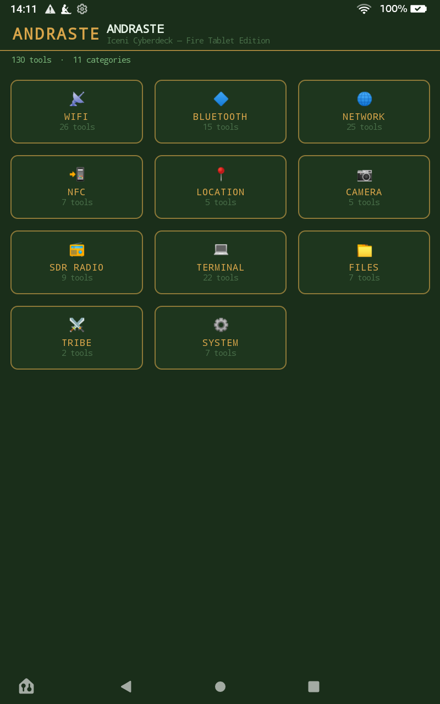
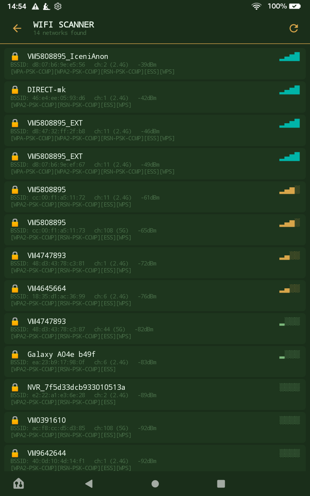
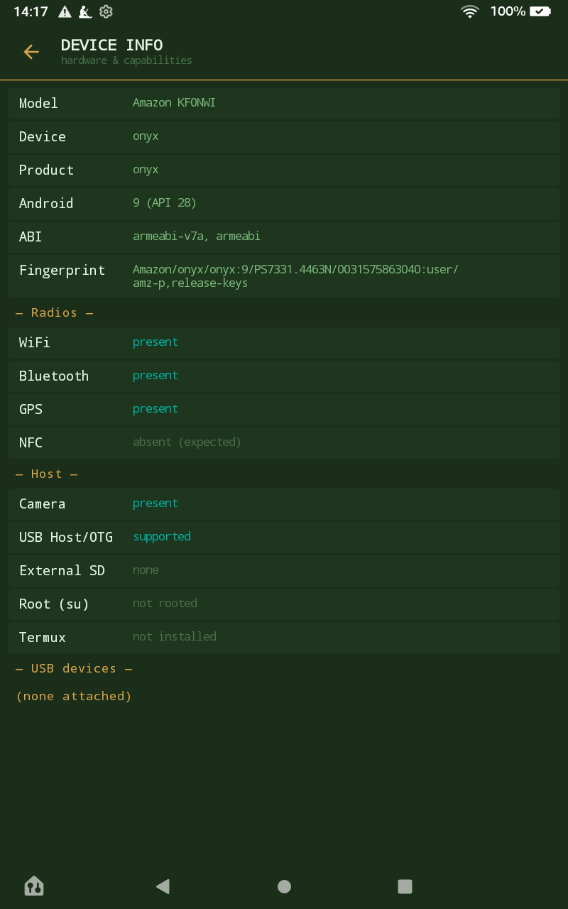

Prasutagus makes open-source recon, detection and field tools for the hardware you already carry — a tablet, a microcontroller, a cyberdeck.
Named for the Iceni. Built defensively: detectors and scanners, not attack emitters — run on the networks you own or are authorised to test.
Andraste turns an ordinary Fire HD 8 into a field toolkit: an app-launcher of security and utility tools organised by category, in one native, offline app. No Google services required.



Everything here is a free download. The tablet app updates itself over WiFi once installed; the board firmware flashes over USB and pulls OTA updates after.
The 84-tool app. Sideload the APK, then it self-updates over WiFi from inside the app (System → OTA Update).
The microcontroller version that started it all — a self-contained handheld build that pulls over-the-air updates once flashed.
Tools are grouped and badged by risk — passive scanners and detectors by default, with active tooling clearly marked and gated to your own authorised targets.
Scanner, evil-twin & WPS detectors, channel analyser, signal meter, wardrive/WiGLE export.
Scanner, beacon decoder, tracker hunter, GATT explorer, skimmer & spam detectors, Find-My observer.
Port & LAN recon, service discovery, DNS, HTTP probe, MQTT, SSH, bandwidth test, printer discovery.
Live GPS, GPX track recorder, GNSS sky view, wardrive logging.
QR / barcode, EXIF inspector, surveillance-camera hunter, drone Remote-ID monitor.
Browser, hashing, hex / log / PCAP viewers, export & share.
A bridge to the Linux security toolchain via Termux, launched by preset.
ADS-B, AIS, weather-sat, rtl_433 and more — for when you add an RTL-SDR dongle.
Write-ups and videos on building, flashing and using the tools — and the story behind them.
From developer mode to first launch, step by step.
Install the Linux security tools the terminal category drives.
Building the original Andraste on a Cheap Yellow Display board.
Root and kernel, or the easy USB-OTG adapter route.
The boards and add-ons these builds run on. Links go to the exact hardware; some may be affiliate links that support the project at no cost to you.
The original cyberdeck — ESP32 with a built-in touchscreen.
View hardware →Prasutagus was king of the Iceni, the Norfolk tribe whose revolt under Boudica shook Roman Britain in 60 AD. The name carries a local, defiant, build-your-own spirit — which is exactly how these tools are made: our own code, our own way, for people who'd rather understand their kit than rent it.
Everything here is open source and free to download. It's built and maintained in Norfolk, England, as a working portfolio across security engineering and applied AI.
The tools default to passive and defensive: scanners, detectors, and read-only recon. Active and offensive tooling is clearly badged and meant only for networks and devices you own or are explicitly authorised to test.
Licensed AGPL-3.0. Use it, learn from it, build on it.